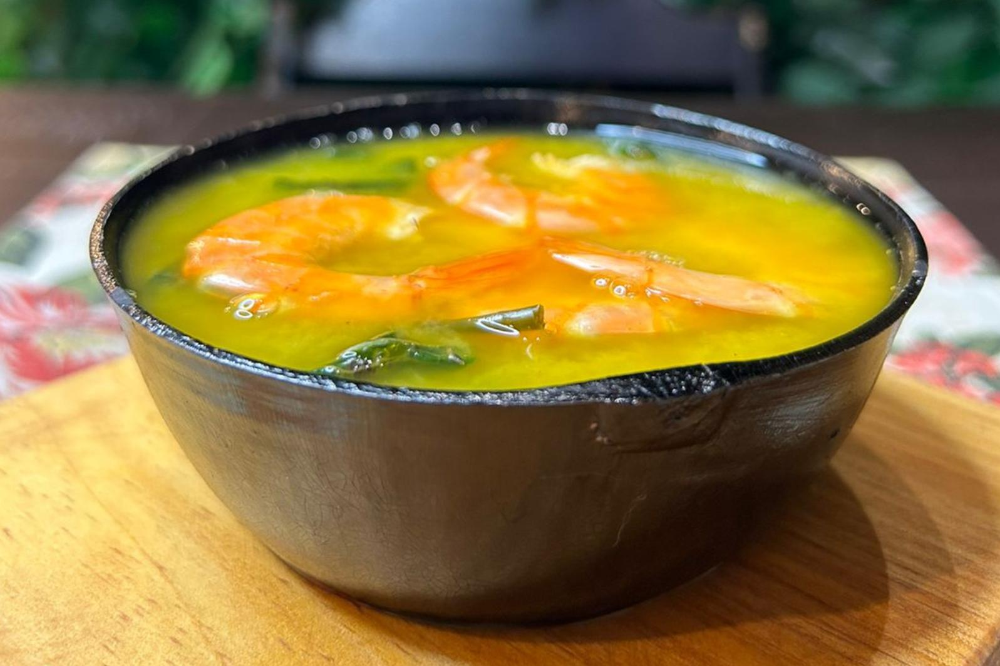

Olá! Me chamo Alexandre e este é o meu blog! Aqui será um espaço no qual pretendo contar um pouco da história da culinária brasileira, enquanto dou as minhas opiniões e expresso as minhas experiências
Olá! Me chamo Alexandre e este é o meu blog! Aqui será um espaço no qual pretendo contar um pouco da história da culinária brasileira, enquanto dou as minhas opiniões e expresso as minhas experiências

O Tacacá é um dos pratos mais tradicionais da culinária brasileira, feito à base de tucupi, goma de tapioca, camarão seco e jambu. Muito popular pricipalmente na região nortista do país e muito consumido nos fins de tarde em Belém.